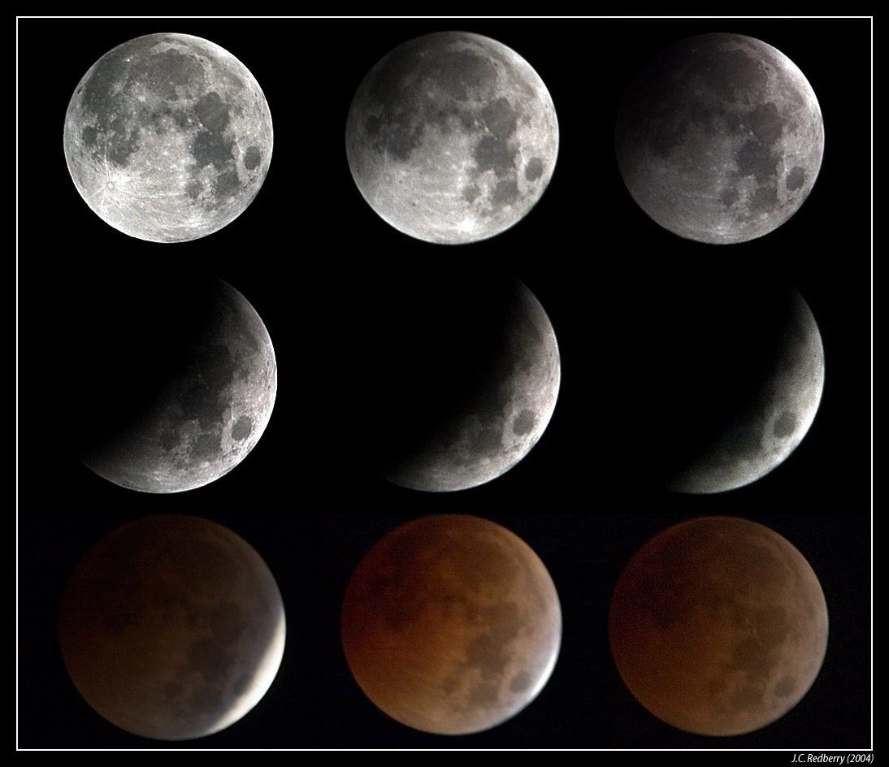
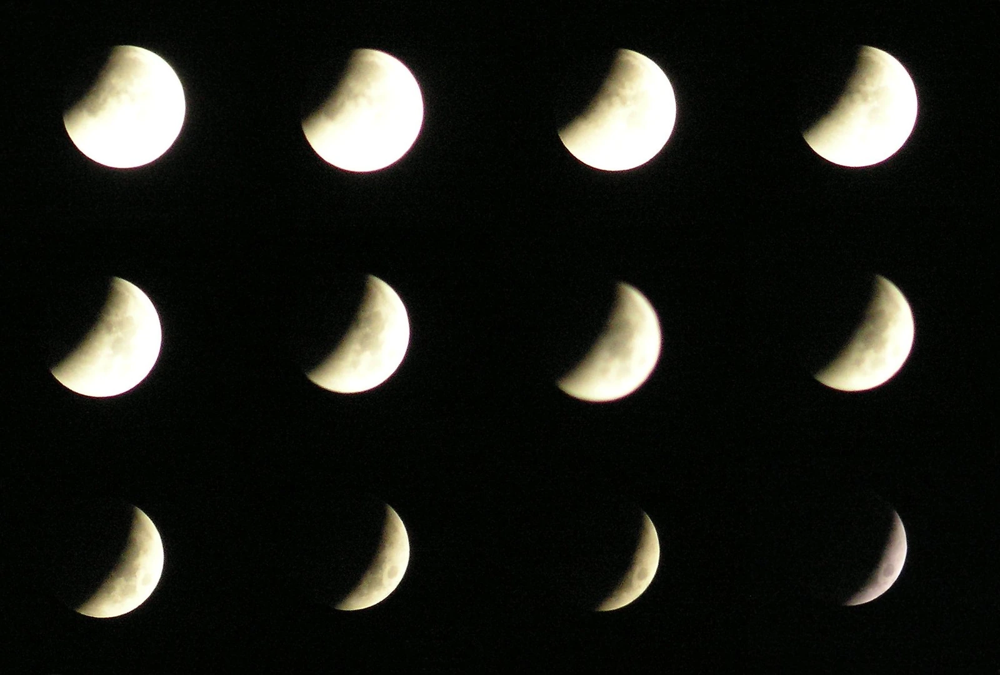

관측 기록 · 본문과 도판 약 10분
오늘 밤, 달을 보러 갈 수 있을까?
달을 관측하려는 사람에게 필요한 정보는 한데 모여 있지 않다. 언제 구름이 걷힐지, 어느 방향으로 달이 뜰지, 지난번에는 어떤 접안렌즈를 썼는지, 다른 관측자는 같은 분화구를 어떻게 기록했는지. 오늘이라면 날씨 앱과 천문 달력, 검색 결과, 사진 커뮤니티를 오가며 답을 찾을 수 있다. 기록을 저장하고 동료에게 보내고, 날짜가 바뀌면 계획을 다시 고친다. 웹은 이 일들을 연결하는 배경이 되었다.
지금이라면 늦은 오후에 천문대 공지를 열고, 구름 예보를 본 뒤, 동료에게 장소를 보낼 수 있다. 하지만 1993년의 관측자가 가장 먼저 풀어야 했던 문제는 다른 곳에 있는 관측 일지를 어떻게 찾느냐였다. 같은 하늘을 보려는 일이 시대마다 어떤 웹을 필요로 했는지, 노스리지 천문대라는 가상의 장소를 따라가 보자.
01 · 연결 · 1989—1993
흩어진 기록 사이에 길을 놓다
1989년 3월, CERN의 소프트웨어 엔지니어 팀 버너스리는 연구소 안의 정보 관리 문제를 제안서로 정리했다. 여러 컴퓨터와 운영체제, 서로 다른 연구팀 사이의 문서를 한곳에 복사해 통일하기는 어려웠다. 그는 기존 문서에 다른 문서의 주소를 연결하고 링크를 따라 정보를 찾는 분산형 시스템을 제안했다. 1990년 11월, 버너스리와 로버트 카이오가 공동 제안서를 제출했다. 그해 말에는 CERN에서 첫 웹 서버와 브라우저 편집기가 작동했다.
인터넷은 서로 다른 컴퓨터가 데이터를 주고받게 하는 통신 기반이다. 그 위에서 웹은 주소가 붙은 문서를 요청하고, 문서 안의 링크를 따라 다른 자료로 이동하는 방법을 제공한다. 이렇게 문장이나 그림에 다른 자료로 이어지는 참조를 붙인 글을 하이퍼텍스트라고 한다. 자료가 있는 컴퓨터의 종류를 먼저 알 필요가 없었다.
달 관측을 예로 들어 보자. 한 서버에는 10월 23일의 관측 일지가, 다른 곳에는 망원경 사양과 보정 표가 있을 수 있다. 또 다른 연구소가 측정법에 답한 기술 교신을 보관한다. 관측자는 일지를 읽다가 측정값이 어디서 왔는지 따라가고, 다시 원래 자료로 돌아온다. 자료는 각 기관에 남아 있지만 읽는 사람은 필요한 순서로 엮을 수 있었다. 신뢰는 문서의 출처와 작성자, 기록된 방법을 확인하는 데 놓였다.
열린 소프트웨어, 넓어진 독자
1993년 4월 30일 CERN은 웹 소프트웨어를 퍼블릭 도메인에 두어 누구나 사용할 수 있게 했다. 같은 해 미국 NCSA의 Mosaic은 텍스트와 이미지를 한 페이지에 보여 주며 웹 탐색에 익숙하지 않은 사람도 링크를 쉽게 따라가게 했다. CERN의 공개 정책과 Mosaic의 보급은 웹이 연구기관 밖으로 퍼지는 데 각각 다른 역할을 했다. 자료를 연결할 도구가 열린 덕분에 연결할 이야기도 훨씬 다양해졌다.
관측 일지에서 다른 기관의 기록으로02 · 발견과 표현 · 1990년대—2001
홈페이지의 이웃과 검색의 순위
그래픽 브라우저가 보급되고 인터넷 접속과 웹 공간을 얻기 쉬워지자, 웹의 작성자는 연구기관의 전산 담당자에 한정되지 않았다. 1990년대 후반에는 개인이 자기 페이지를 만들고 취미와 일상을 기록했다. 달을 보는 아마추어 관측자는 망원경을 직접 조립하는 법, 지난밤의 스케치와 사진, 실패한 관측담을 HTML로 올릴 수 있었다. 홈페이지의 색과 배치는 만든 사람의 성격을 드러냈다. 카운터와 방명록은 방문의 흔적을 남겼고, 웹링은 비슷한 주제의 사이트를 연결했다.
이 연결은 오늘날의 검색 결과나 피드와 달랐다. 웹링의 운영자나 다른 홈페이지 주인이 링크를 걸어 주면 방문자는 이웃 사이트를 알게 되었다. 각 페이지는 독립된 주소를 가진 작은 집 같았다. 하지만 관측법을 찾는 사람은 어느 사이트가 최신인지 알기 어려웠다. 링크가 늘수록 발견의 부담도 커졌다.
주소를 몰라도, 궁금한 것은 알 수 있다
1990년대 중반의 검색 서비스는 이 문제를 여러 방식으로 풀었다. Yahoo는 1994년 제리 양과 데이비드 필로가 만든 웹 디렉터리에서 출발해 사람이 주제별로 사이트를 분류했다. 편집자가 만든 천문학 목록을 훑는 방식은 주제의 지도를 보여 주지만, 모든 페이지를 사람이 분류하기는 어렵다. 자동 수집과 키워드 검색은 더 큰 범위를 다룰 수 있었으나, 검색어가 본문에 많이 등장한다는 이유만으로 좋은 자료가 위에 오를 수 있었다.
1998년 설립된 Google은 PageRank를 검색 순위의 한 요소로 사용했다. 다른 페이지가 얼마나, 또 어떤 페이지에서 해당 문서를 가리키는지 살펴 링크 수와 링크를 건 페이지의 중요도를 함께 고려했다. 링크는 이용자가 건너가는 통로인 동시에 웹페이지 사이의 관계를 보여 주는 신호가 되었다. 이것이 순위의 전부는 아니었고 검색 엔진은 여러 신호를 함께 사용했다. 2000년 Yahoo가 Google의 검색 기술을 채택한 일은 검색이 웹 이용의 중심 관문으로 커지고 있음을 보여 준다.
사람이 잇는 경로 · 1998
WebRing: Lunar Observers
East Window Notes Lyra Eclipse Log North Ridge Moon Diary
색인과 순위 · 2001
Search results
lunar eclipse observing log⌕
- 16 Sep 1997 · Total lunar eclipseNorth Ridge Moon Diary · fictional log
- NASA eclipse predictions · 2001–2010
- Amateur telescope notes · archive
관측자는 이제 lunar eclipse라고 입력해 월식 날짜나 촬영 기록을 찾는다. 디렉터리를 뒤지거나 출발 사이트의 주소를 기억할 필요가 줄었다. 이제 첫 선택은 어느 사이트에 갈지가 아니라, 무엇을 찾고 싶은지였다. 어디에서 온 자료인지 판단하려면 결과를 열어 날짜와 작성자를 확인해야 했다.
03 · 참여와 일상 · 2001—2013
기록을 올리고, 함께 고치고, 피드에서 만나다
2001년 시작한 Wikipedia는 자원봉사자가 항목을 만들고 고치는 백과사전이 되었다. 누구나 편집할 수 있다는 원칙은 작성자와 독자의 경계를 흐렸다. 블로그도 일기처럼 글을 발행하고 독자의 댓글에 답하는 일을 쉽게 만들었다. 웹은 완성된 문서를 읽는 곳에 머물지 않고, 방문자가 내용을 보태는 출판 환경으로 넓어졌다. 관측자는 자기 관측 결과를 게시할 뿐 아니라, 다른 사람이 남긴 측정 오류를 지적하고 자료를 보완할 수도 있었다.
이런 변화를 묶어 부르는 말이 Web 2.0이었다. 2004년 콘퍼런스에서 이름이 널리 알려졌고, 팀 오라일리는 2005년 에세이에서 참여할수록 자료가 쌓이는 서비스와 웹을 플랫폼으로 쓰는 흐름을 설명했다. 다른 표준으로 교체된 날짜를 가리키는 말이기보다, 누가 쓰고 무엇을 함께 할 수 있는지 달라진 모습을 설명하는 말에 가깝다.
링크를 따라 출처를 확인하다
앞 장에서 살펴본 연결 방식으로 관측 일지의 보정표를 연다.
READ · 앞 장의 연결을 되짚기
관측 일지 → 기기 보정표
개인 기록을 올리고 검색에서 찾다
1998년 홈페이지에 올린 가상의 1997년 월식 일지를 이웃 링크나 2001년 검색에서 다시 만난다.
PUBLISH · 한 기록, 두 발견 경로
개인 홈페이지 → 검색 색인
서로 다른 사진에서 같은 월식을 보다
2005년의 Flickr에서는 여러 사용자가 붙인 태그를 열어 주제가 비슷한 사진을 나란히 볼 수 있었다. 2004년 10월 28일의 월식도 어떤 카메라에는 한 장의 붉은 달로, 다른 카메라에는 그림자가 서서히 이동하는 여러 프레임으로 남았다. 사진은 서로의 관측 조건과 촬영법을 묻는 대화의 출발점이 됐다.
Moonstream의 월식 사진 열기촬영자마다 같은 밤을 어떻게 기록했는지 비교해 보세요.SHARE · 분류하고 비교하기
같은 월식, 서로 다른 사진
공개 태그 스트림 · 28 Oct 2004

.jpg){kind=link}


.jpg){kind=link}



동료와 같은 문서를 고치다
브라우저 안에서 앱처럼 작동하는 서비스도 늘었다. Gmail은 2004년 메일 대화를 한데 묶는 웹메일을 내놓았고, Google Maps는 2005년 지도를 끌어 움직일 때 전체 페이지를 다시 불러오지 않고 필요한 지도 타일을 갱신했다. 이런 부분 갱신에는 비동기 요청, 즉 AJAX가 쓰였다. 이후 HTML5는 브라우저에서 영상·음성 재생과 그래픽 그리기를 위한 표준 기능을 넓혔다. 문서와 스프레드시트를 함께 편집하는 웹 앱도 파일을 주고받는 대신 같은 문서에서 협업하는 일을 익숙하게 했다.
이를 관측 준비에 대입하면 역할의 차이가 분명하다. 한 사람이 올린 일정표를 읽고 따로 수정본을 보내던 일을, 공유 문서의 장소와 장비 칸에 각자 수정 내용을 남기는 일로 바꿀 수 있다.
WORK · 같은 일정표를 편집하기
각자 맡은 항목을 고친다
사진을 찾아가는 웹에서 피드를 받아보는 웹으로
사진뿐 아니라 영상도 널리 오갔다. 2005년 등장한 YouTube에서는 촬영한 영상을 올리고 링크로 퍼뜨릴 수 있었다. 이후 스마트폰으로 관측지에서 사진을 찍고 이동 중 댓글을 읽거나 약속 장소를 확인하는 일이 익숙해졌다. 브라우저로 여는 모바일 웹과 설치형 앱은 함께 성장했다. 수익을 내야 하는 소셜 서비스는 광고와 콘텐츠 추천을 피드 안에 결합하며 사용자가 자주 돌아올 이유를 만들었다.
2005년 태그 페이지에서 독자는 주제를 골라 사진을 찾아간다. 2013년 페이스북의 새 뉴스피드는 친구들의 소식을 받아보는 화면에서 사진을 더 크게 보여 주고, 사진처럼 특정 유형의 콘텐츠만 볼 수 있게 하는 방향을 발표했다. 같은 관측 사진도 누구와 연결돼 있고 서비스가 무엇을 먼저 보여 주느냐에 따라 전혀 다른 때에 눈에 띈다. 추천은 발견을 돕는 한편, 덜 노출된 관점과 원래 글의 문맥을 놓치게 할 수 있다.
친구의 관측 소식이 섞인 뉴스피드 열기04 · 축적 · 공개된 기록과 언어 모델
공개된 기록은 어떻게 학습 자료가 되었을까?
망원경을 보정한 방법, 틀린 설명을 고친 위키 문서, 동료가 다시 쓸 수 있게 공개한 코드가 수십 년 동안 웹에 쌓였다. 이처럼 다양한 표현과 문맥을 담은 자료 가운데 일부를 수집하고 선별해 대규모 언어 모델을 학습시켰다.
자료마다 목적과 품질은 다르다. 앞의 네 단계는 가상의 관측 일지를 따라가고, 마지막 단계는 새 예보를 조회하는 별도 과정이다. 모델 구조와 계산 자원, 학습 방법도 발전에 함께 기여했다.
어떤 기록이 남는가?
가상의 관측자가 “밤 9시에 달 가장자리가 구름에 가렸다”라고 공개 글에 남긴다. 이 기록은 처음부터 학습용으로 쓰인 것은 아니다.
PUBLISH · 공개된 기록
같은 웹에는 서로 다른 목소리가 있다
열 수 있는 주소 일부를 일정 시점에 수집한다
Common Crawl은 웹페이지를 자동으로 방문해 응답을 보존하고, 주소와 수집 시점을 찾을 수 있는 색인을 제공한다. 수집본은 방문이 성공한 시점의 일부 사본이며, 로그인 뒤 자료나 방문하지 못한 주소는 담기지 않을 수 있다.
CRAWL · 시점이 있는 수집
크롤러가 접근 가능한 페이지를 방문한다
중복·품질을 살펴 학습 후보를 고른다
수집된 페이지 중 일부는 중복 제거와 품질 검토를 거쳐 학습 후보가 된다. 크롤에 포함됐다는 이유만으로 실제 학습에 쓰였다고 볼 수는 없으며 기준은 모델과 데이터셋마다 다르다.
CURATE · 선별과 중복 제거
모든 수집 자료가 학습 묶음에 들어가지는 않는다
문장 예측이 달라지도록 모델을 조정한다
GPT-3 논문의 표 2.2에는 필터링한 Common Crawl, WebText2, 두 책 말뭉치, 영어 위키백과가 함께 나온다. 학습에서 뽑는 비율은 자료별로 달랐고, 이 사례에서는 Common Crawl이 가장 큰 비중을 차지했다.
언어 모델은 앞의 글을 보고 다음 토큰(글의 작은 단위)을 예측한다. 예상과 실제 문장의 차이를 줄이는 방향으로 가중치를 반복 조정한다. 많은 예시와 계산 자원, 모델 구조와 학습 방법이 함께 필요하다. 가중치는 원문을 열어 보는 색인이 아니며, 모델이 간혹 학습 문구를 되풀이한다고 해서 언제나 정확하게 인용한다는 보장도 없다.
TRAIN · 다음 토큰 예측
여러 자료와 학습 방법이 모델의 가중치를 조정한다
“달 가장자리가…” 다음 토큰?
예측과 목표의 차이에 따라 가중치를 반복 조정오늘 밤의 예보는 다시 찾아 읽는다
관측을 앞둔 오후, 바뀐 구름 예보를 묻는 사람이 있다. 검색 도구를 연결한 서비스라면 시각이 적힌 기상 자료를 가져와 질문과 함께 모델에 건넬 수 있다. 그 자료는 이번 답변에 쓰이는 문맥이다. 예보를 읽는 동안 저장된 모델 가중치는 그대로다.
RETRIEVE · 현재 출처 확인
새 예보는 저장된 모델 바깥에서 들어온다
공개된 기록을 어디까지 이용할 수 있을까?
공개 웹을 학습에 이용할 권리와 조건은 여전히 논쟁 중이다. 페이지가 공개되어 있어도 창작자는 허락 없는 복제나 상업적 학습에 동의하지 않았을 수 있다. 개인정보와 민감한 정보, 충분히 대표되지 않은 언어와 공동체의 문제도 남는다. 현재 웹을 검색해 문장을 가져오는 일도 그 자료의 저작권을 없애지 않는다. 검색과 도구 사용에도 접근 제한, 이용 조건, 개인정보 보호 문제가 따른다. 인터넷에 기록을 남길 기회가 적었던 언어나 공동체는 수집이 커져도 덜 대표될 수 있다. 무엇을 얼마나 남기고 누구의 허락을 받는지는 결국 데이터셋의 성격을 정하는 선택이다.
사람들이 서로의 지식을 찾으려고 키운 웹은 모델 학습의 중요한 자료원이 되었다. 다음 장면에서는 학습으로 얻은 능력이 지금의 웹과 만난다. 새로운 자료를 읽은 다음, 그 자료를 근거로 어디까지 행동할 것인지 결정할 차례다.
05 · 지능과 행동 · 2023—2026
답을 얻는 일에서, 행동을 맡기는 일로
전통적인 검색에서 관측자는 검색어를 만들고, 결과 목록을 훑어 여러 사이트를 직접 연다. 생성형 검색은 질문을 받아 자료를 요약한 답을 먼저 보여 주며 이 순서를 바꾸려 한다. 2023년 Google Search Labs의 Search Generative Experience(SGE)는 검색 결과 페이지 안에 생성형 AI 개요를 더하는 실험이었다. 질문을 문장으로 던지고 이어서 묻는 흐름은 검색을 대화에 가깝게 만들었다. 하지만 한 문단의 요약은 원자료 사이의 차이를 감추거나 잘못된 내용을 그럴듯하게 섞을 수 있다. 답에 딸린 출처를 열어 날짜와 맥락을 살피는 습관은 여전히 필요하다.
생성형 검색에서 답변의 출처 열기날씨가 바뀌었다. 관측회 시간도 바뀌었을까?
관측회에 가려던 사람에게 두 가지 소식이 도착한다. 오후 예보는 구름이 줄었다고 하고, 천문대 공지는 모이는 시각을 오후 8시에서 8시 30분으로 고쳤다. 구름 예보는 갈지를 판단할 자료이고, 공지는 행사 시각을 확인할 출처다. 같은 질문으로 검색 결과를 여는 일, 자료를 종합한 답을 읽는 일, 그 답을 근거로 일정을 바꾸는 일은 필요한 확인이 서로 다르다.
SEARCH · 찾기
ANSWER · 정리
ACTION · 제안
언어 모델에 검색과 브라우저 조작, 문서 편집 같은 도구를 연결하면 여러 단계를 위임할 수 있다. 2025년 공개된 ChatGPT agent는 브라우저 등을 사용해 작업하는 이 방향의 사례다. 그래도 일정표를 열 수 있다는 사실과 이를 고칠 권한은 별개다. 관측자는 공지 원문을 확인하고, 어느 파일의 어떤 항목이 바뀌는지 본 뒤 승인하거나 거절할 수 있어야 한다. 키워드 검색과 원문 확인은 이 작업 속에서도 쓰인다.
노스리지 관측 계획 열기자료를 확인하고, 계획을 고른 뒤, 포스터 변경안을 검토해 보세요.에필로그 · 다시 하늘을 보다
다시, 관측 일지를 펼치다
시간이 바뀐 것을 확인한 관측자는 새 시각에 맞춰 망원경을 준비한다. 달이 뜨면 한 줄을 쓴다. 구름은 언제 걷혔는지, 어떤 접안렌즈를 썼는지, 다음 사람에게 무엇을 알려 주고 싶은지. 누군가에겐 그 문장이 링크를 따라 겨우 찾아낸 기록일 수 있고, 또 다른 누군가에겐 다음 관측을 계획할 출처일 수 있다.
웹이 앞으로 어떤 모습이 될지는 아직 열려 있다. 다음 도구가 무엇이든 어떤 기록을 남기고, 무엇을 근거로 삼고, 어떤 결정을 사람에게 돌려줄지는 우리가 함께 정할 일이다. 그 질문을 품고 첫 장면의 연구 도서관으로 돌아가 보자.
1993년, 첫 관측 기록 열기자료실 · 장별 참고 자료
장별 참고 자료
연결 · CERN과 초기 웹
- Tim Berners-Lee, Information Management: A Proposal (1989) 및 W3C, History · 제안, 첫 서버와 브라우저의 연혁.
- CERN, The birth of the Web 및 NCSA, Mosaic · MDN, World Wide Web · 1993년 CERN의 공개 정책과 Mosaic 개발·보급은 별도의 기록으로 확인.
발견 · 디렉터리와 검색
- Yahoo의 초기 역사 자료, Yahoo Selects Google as Its Default Search Engine (2000) · Yahoo 디렉터리의 출발과 Google 검색 채택.
- NASA GSFC, Lunar Eclipse Figures 및 NASA GSFC, Catalog of Lunar Eclipses 1901–2000 · 1997년 9월 16일 개기월식 날짜. 이 도판의 North Ridge 관측 일지는 가상이다.
- Brin & Page, The Anatomy of a Large-Scale Hypertextual Web Search Engine (1998) · PageRank를 포함한 초기 Google 검색 설명.
참여 · 공동 편집, 사진과 웹 앱
- Wikipedia · Wikipedia history and launch (2001), Tim O'Reilly, What Is Web 2.0? (2005).
- Flickr, The New New Things (2005) · Google, Introducing Gmail (2004) · Google, Google Maps (2005).
- YouTube · Me at the zoo (2005) · Meta, A New Look for News Feed (2013) · Facebook, Fourth Quarter and Full Year 2013 Results.
축적 · 데이터와 언어 모델
- Common Crawl 및 데이터 이용 안내 · 공개 웹 아카이브와 검색 가능한 인덱스의 구조.
- Brown et al., Language Models are Few-Shot Learners (2020) 및 OpenAI, GPT-3 Model Card · 훈련 자료 예시와 모델의 한계·위험.
- U.S. Copyright Office · Copyright and Artificial Intelligence · 학습 자료와 저작권에 관한 정책 검토.
행동 · 생성형 검색과 에이전트
- Google, Generative AI in Search Labs (2023) · SGE 공개 실험.
- NASA Image and Video Library API, Spaceflight News API, Open-Meteo · 체험의 실제 공개 데이터 조회에 관한 참고.
- OpenAI, Introducing ChatGPT agent (2025) · Google, Chrome auto browse (2026) · Chrome for Developers, WebMCP origin trial.
노스리지 천문대, The Orbit Room, Moonstream, Pacebook과 Orbit Search는 전시용 재구성이다. 도식 속 관측 기록과 일정은 설명을 위한 예시이며, 아카이브 사진의 촬영자와 원본 출처는 해당 도판에 표시했다.